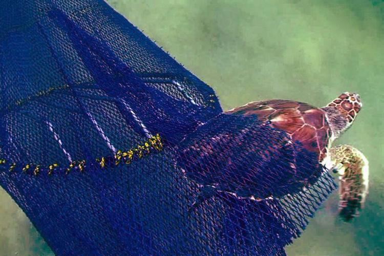
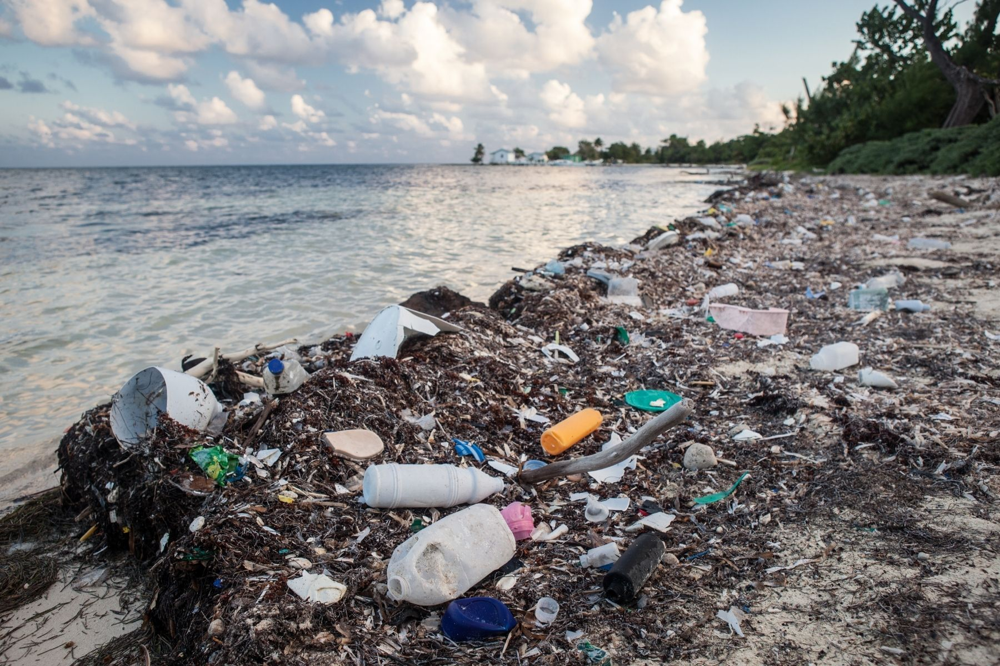

Basic Information:
Loggerhead sea turtles, with their large, robust shells, are predominantly found in tropical waters of the Atlantic, Pacific, and Indian Oceans. These highly migratory creatures travel an average distance of 7,500 miles between their breeding beaches and hunting grounds. While they breed on land, loggerhead sea turtles spend the majority of their time submerged in water. Presently, their population in the wild stands at approximately 200,000 individuals.
Endangerment:
The endangerment of loggerhead sea turtles stems from various factors. Accidental entanglement in fishing gears and nets leads to their demise, while human hunting targets them for their meat, skin, and shells. Ocean pollution and marine debris contribute significantly to their deaths, as ingestion of plastic mistaken for food results in suffocation. Reproduction is challenging due to hatchling vulnerability to predators such as ghost crabs, raccoons, skunks, foxes, and dogs. Climate change amplifies threats through higher sand temperatures, which can be lethal to turtle eggs. Rising seas and storm events cause beach erosion, potentially flooding or washing away nests. Moreover, the instinct of hatchlings to seek the moon's light is confounded by coastal development lights, leading them towards roads and perilous outcomes.
Existing initiatives:
Efforts to protect loggerhead sea turtles, an endangered species, have been undertaken by the government. One initiative is Nesting Beach Protection, which involves monitoring nesting beaches and implementing barriers to safeguard their eggs from predators. In certain cases, nests are relocated to safer areas. Another measure is the use of Turtle Excluder Devices, which selectively capture shrimp and fish while allowing larger marine life, including loggerhead sea turtles, to escape as bycatch prevention. Marine Protected Areas, legally designated ocean regions, serve as havens to shield marine life, including loggerhead sea turtles.
Awareness Campaign Idea
To address the various challenges faced by loggerhead sea turtles, a comprehensive approach could involve a combination of habitat and conservatory measures. One potential solution is the creation of a 3-D habitat structure that accommodates both their land-based and underwater needs. This structure could feature a split design, with half situated on land and half underwater.
The underwater portion of the habitat could address the issue of accidental capture by fisheries. By incorporating Turtle Excluder Devices or similar mechanisms, the structure would help prevent loggerhead sea turtles from being unintentionally caught as bycatch.
The land-based section of the habitat would primarily focus on mitigating the impact of sea debris on the nesting process. It could serve as a barrier to prevent debris from being washed ashore, thereby facilitating successful nesting for loggerhead turtles. This would also help protect newborn loggerheads from entanglement in the debris, ensuring their safety and survival.
The urgency for such measures is highlighted by the decline in the loggerhead sea turtle population. Statistics reveal a significant drop in loggerhead numbers in the wild, underscoring the need for immediate conservation efforts. By comparing the current living conditions of loggerhead turtles to the ideal conditions provided by the proposed 3-D habitat structure, the importance of creating a safe and suitable environment for these turtles, as well as other marine life, becomes evident.
One Possible Solution Involving TED
One potential solution to address the issue of ocean plastic pollution involves implementing a payment system based on the weight of plastic collected. This incentivizes individuals or organizations to actively participate in cleaning up marine debris, including the majority of polyethylene plastics.
Furthermore, the collected plastic can be utilized to offset material costs for Turtle Excluder Device (TED) producers. By repurposing the collected plastic for manufacturing TEDs, the overall cost of production can be reduced, making these crucial devices more accessible and affordable.
Implementing such solutions not only helps combat plastic pollution but also creates employment opportunities in local areas. Job roles for trash collectors and TED manufacturers can be generated, fostering economic growth while addressing environmental concerns.
Considering the prevalence of polyethylene in ocean plastics, targeting this specific type of plastic for collection and recycling efforts becomes crucial for effective mitigation of marine pollution. By focusing on polyethylene, substantial progress can be made in reducing the overall impact of plastic waste on marine ecosystems.
Limiting Factors:
Limiting Factors are factors that place an upper limit on the size of the population. There are 6 main factors that are applicable to animals:
- Temperature
- Water
- Breeding sites
- Food supply
- Territory
- Salinity
- Temperature: Loggerhead sea turtles thrive when the temperature is above 22 degrees celsius in the water.
- Water: Loggerhead sea turtles primarily live underwater so they don't necessarily have a set limit as to how much water they should intake.
- Breeding Sites: As mentioned before, loggerhead turtles breed on sandy beaches and this is an example of natal homing where a species returns back to their birthplace to breed and reproduce.
- Food Supply: Loggerhead sea turtles need to live in waters where they have access to crustaceans, fish, seaweed, sargassum, and other marine animals.
- Territory: Loggerhead turtles are found primarily in the Atlantic, Pacific, and Indian Oceans, as well as the Mediterranean Sea.
- Salinity: Loggerhead turtles live only in salt water environments.
Loggerhead turtles, as with many other species, have predators and prey. As baby turtles, a few predators include raccoons, ghost crabs, foxes, skunks, etc. When they are grown up, they mainly face predation from sharks and humans. As mentioned previously, loggerhead turtles also prey on other sea creatures for food such as jellyfish, shrimp, fish, sponges, etc. Loggerhead turtles are important in the food chain as they are known as keystone species. Keystone species are species that are crucial in the ecosystem and if they are removed, the ecosystem would change drastically. Loggerhead turtles are important in the ecosystem because they increase the rate of nutrient recycling by breaking up the shells of crustaceans. They also promote diversity around the world in the seam water and are important sources of food for other animals. These turtles help in controlling the population of jellyfish and also maintain the coral reef and its health.
Impacts Of Humans On Ecosystems:
Bioaccumulation is the process where living organisms accumulate toxins in their body through the food they consume. In waterways, inorganic mercury is converted to organic methyl-mercury. This organic form of mercury is readily absorbed by plankton, which is then absorbed by other organisms that are included in a Loggerhead turtles diet including crabs, fish, and mollusks which results in the turtles consuming a greater concentration of chemicals. This process is called biomagnification.
Both macro and micro plastics are ubiquitously present throughout our oceans. Transported by gyres, high concentrations of plastic shred into microplastics are carried through coastal regions across the North and South Pacific Ocean. Due to the turtles wide variety in diet and inhibition in coastal areas, the Logger back are often susceptible to encountering and ingesting pollutants such as plastic debris and urban area runoff that often impact nearby coasts. These plastics can either be consumed directly or indirectly through bioaccumulation. Directly, plastic ingestion may be mistakenly identified as normal prey such as jellyfish and other small organisms, or caught in their normal dietary items such as macro algae.
pH Levels:
For loggerhead sea turtles, it is beneficial for the sand on the coast to have a high pH, low nutrient content, and a high concentration of salt. For their water habitat, the ideal pH of the water is between 7.4 to 8.0.
Nutrient Levels:
Nutrients, such as phosphorus and nitrogen, are essential in the health of ecosystems and loggerhead turtles. When there is nutrient runoff from the land that accumulates and builds up, this can result in eutrophication. This causes an overgrowth of algae and that results in the depletion of oxygen in the water. This is detrimental to marine life health and the health of loggerhead sea turtles as it will affect their diet and also their habitat.
Heavy Metals:
There have been studies that heavy metals, such as mercury and lead, accumulate in loggerhead sea turtles' tissues. This is due to the fact that the turtles have longer lifespans and migrate a lot, making them more susceptible to heavy metal exposure.
Redox → Dissolved Oxygen:
Dissolved oxygen is a measure of how much oxygen has been dissolved in the water and how much oxygen is available to aquatic life. Loggerhead turtles rely on the oxygen in the water to aid in their metabolic processes as well as respiration. You can test the amount of oxygen present in the water by conducting an experiment known as the Winkler method and performing stoichiometric calculations to determine how much dissolved oxygen is present. Oxygen, as mentioned before, is important as lower levels of oxygen can pose difficulties for turtles and affect their well-being.

Biochemistry And The Environment:
Xenobiotics are compounds that are present in organisms that are not normally found in the habitat. This can include plastic, which is often found in loggerhead turtle habitats. These turtles often ingest the plastic found on the beaches or in the ocean, which poses a great risk for their health. Plastic is a well-known substance that is detrimental to the environment. It is made of additional polymers formed by alkenes. When the alkenes are added together, this creates a long chain of hydrocarbons with functional groups that allow for plastic to have its properties. The hydrocarbon chains result in the difficulty faced by plastic in breaking down as they must also be exposed to higher temperatures and sunlight.